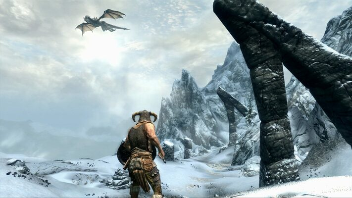
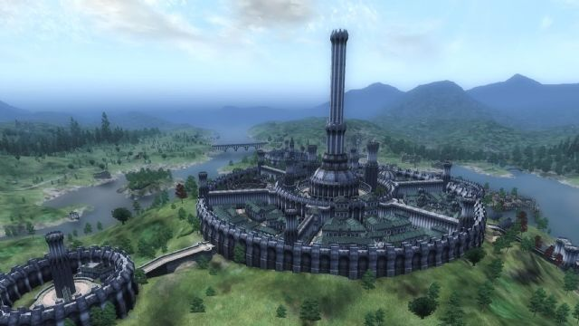

Siteme Hoş Geldiniz!!!
Bu siteyi kendimi ve yaşadığım şehir olan İstanbul'u tanıtmak için açtım. Umarım keyif alırsınız!
Merhaba, ben Furkan İsmet Tufan. Sakarya Üniversitesi Bilgisayar Mühendisliği bölümünde okuyorum. 2000 yılında Kadıköy, İstanbul'da doğdum. Hayatımın ilk 20 yılını Üsküdar'da geçirdim ve üniversite için İstanbul'dan ayrılmak zorunda kaldım. Yazılıma küçüklüğümden beri ilgi duyan birisi olarak istediğim bölüme geldiğim için yine de çok mutluyum. Hem Sakarya kötü bir yer sayılmaz.
Boş zamanlarımı genellikle müzik dinleyerek geçiririm.
En çok dinlediğim müzik türleri şunlar: R&B, Rap, Blues. Farazi V Kayra duosunun "Hayalet Islığı" albümü en sevdiğim albümdür. 2013'ten beri neredeyse her hafta bu albümü dinlerim.
Albümün Spotify linki için buraya tıklayın
Albümün Youtube linki için buraya tıklayın
Albümün Apple Music linki için buraya tıklayın
Bilgisayar oyunlarını çok severim. MOBA dışında her oyun türünü oynarım. En çok oynadığım türler ise RPG, Point&Click ve Platformer oyunlarıdır. En sevdiğim oyun serisi The Elder Scrolls 'dur. Serinin oyunları olan Oblivion ve Skyrim 'de yüzlerce saat geçirmişimdir.
 